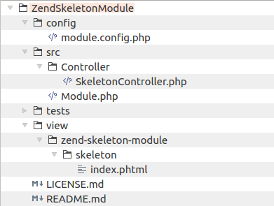

Creating a New Module
When your website grows in size, you can benefit from using Laminas Framework feature called modules. Modular applications consist of pieces that have relatively few dependencies on each other. This allows to install or remove modules on demand. In this chapter you will learn what is a Laminas module, when to create a new module and how to create it.
When to Create a New Module?
A module is an autonomous and reusable unit of your application. By default your application has the single Application module. And it is normal to put your models, views and controllers in this module, especially in a simple website.
A module can contain models, views, controllers and assets. Module classes typically live in a separate namespace (the same as module name). Module has its own configuration file where you can register routes, controllers, controller plugins, services, view helpers and so on.
You may need to create a new module when any of the following is true:
- If your website is relatively large and dividing it into pieces would make it easier to maintain. For example, you can introduce the Admin module and put your backend functionality into that module.
- If the functionality you are implementing is autonomous (has no or few dependencies on other modules of your application. For example, the Blog functionality in theory can be separated in another module, because it does not depend on the rest of the application, but the application depends on it.
- If a module can be separated from your application and concurrently used in another project. For example the Blog module can be reused in another project without changes (only its configuration may require changes).
In any case, real life is complex, and you should be guided by the intuition when it seems that it is necessary to create a new module. If you think that separating a functionality into a module gives you some significant benefits, create the module.
At the same time, you should not create a huge number of almost empty modules, it is better to combine related functionality in a single module.
How to Create a New Module?
There are at least two ways of creating a new module in your website. The first way is copying an existing module from APP_DIR/module directory (such as Application module), removing any unnecessary controllers, models and views, and renaming the existing namespace into your module name in every source file. This may be rather boring.
The second way is downloading an empty skeleton module from the official Laminas Framework repository on GitHub. You can find this repository by this link. You can clone the code or download the code as a ZIP archive (recommended).
For example, in Linux, use the following commands to download the skeleton module:
cd ~
wget https://github.com/laminas/LaminasSkeletonModule/archive/master.zip
unzip master.zip
cp LaminasSkeletonModule-master APP_DIR/module/LaminasSkeletonModule
The commands above download the source of the skeleton module to your home directory, unpack the archive
and copy the files to your website's module directory.
Let's look at the structure of the skeleton module (see figure 14.1):

As you can see, we have a typical directory structure we are already familiar with:
configsubdirectory containsmodule.config.phpfile which is the configuration file for this module.srcsubdirectory is a directory containing module's source files:Controllersubdirectory contains a sample controller class.Module.phpfile is the module entry point. We will discuss it a bit later.
testssubdirectory contains a stub for unit tests for this module. We do not cover unit tests in this book for simplicity.viewsubdirectory contains view scripts (and also may contain module-specific layout templates).
Renaming the Skeleton Module
Before you can use this new empty module, you should choose a name for it. A good name describes the module well.
For example, the name Admin is good when you need a module for backend stuff. Blog name would be good if you
plan to store blog functionality in this module. A good practice is also prepending some vendor name to the module
name, for example YourCompanyBlog.
Once you have chosen the name for the module, you should rename the directory containing module files. For example,
the command below will rename the module into Admin:
mv LaminasSkeletonModule Admin
Next, you should rename the SkeletonController.php into something more descriptive. Don't forget to rename subdirectories
of view directory to reflect the name of the controller.
Finally, walk through configuration and source files of the controller and make sure you renamed the namespace LaminasSkeletonModule
to the name of your module (this is required to ensure your classes will be found by PHP class autoloader).
Enabling Class Autoloading
The last step is to enable PHP class autoloading. Our module source files will be organised to conform to PSR-4 standard, so we will
be able to use standard autoloader provided by Composer. To do that, add the following line into your
composer.json file under the psr-4 key (substitute your module name):
...
"autoload": {
"psr-4": {
...
"Admin\\": "module/Admin/src/"
}
},
...
Next run the following command to update Composer autloader files:
php composer.phar dump-autoload
Note
The dump-autoload command just regenerates autoloader code without installing or updating any dependencies.
Great! The module is now ready for use. You can add controllers, models and views into it. Do not forget to
modify the module.config.php file and register your routes, services, controllers, controller plugins, view helpers, etc.
Enabling the Module
To let Laminas know about the new module and let it load it on app start up, do not forget to enable your new module in your APP_DIR/config/modules.config.php file as follows:
return [
'Admin',
//...
);
Module.php File & Event Listening
The Module.php file located inside of module's source directory is some kind of module entry point.
The Module class defined in this file is loaded by Laminas\ModuleManager component when it loads all application
modules.
One useful thing you can do with this class is registering to events. If you remember from the Website Operation chapter, the application has several life stages represented by events. You may write an event listener function (or class) and register it in your module entry point. When an event is triggered, your listener method (or class) will be called allowing you to do something useful.
Why would I want to register an event listener?
Here are several practical applications of event listening that you may find useful:
- Listen to Route event to force the use of HTTPS secure connection.
- When your website is in maintenance mode, listen to Route event to catch all requests and redirect user to the single page.
- Listen to Dispatch event to redirect a user to a different page. For example, if user is not authenticated, redirect him to the login page.
- Listen to Dispatch event to override the default layout template for all controllers belonging to the module.
- Listen to Dispatch Error event to log and/or report any exception or error happening in your website.
- Listen to Render event to modify the content of the resulting web page.
There are two ways to register an event listener within the Module class: either with the help of Module's init() method or with the
help of its onBootstrap() method. The difference between init() method and onBootstrap() method is that the init() method is called
earlier than onBootstrap(), before all other modules are initialized; while onBootstrap() is called once all modules are initialized.
In the following examples, we use init() method.
Example 1. Switching Layout Template
To show you how to subscribe to an event, let's create an event listener that will react on Dispatch event and set a different layout template for all controllers of the module:
<?php
namespace YourCompanyModule;
use Laminas\ModuleManager\ModuleManager;
use Laminas\Mvc\MvcEvent;
class Module
{
// The "init" method is called on application start-up and
// allows to register an event listener.
public function init(ModuleManager $manager)
{
// Get event manager.
$eventManager = $manager->getEventManager();
$sharedEventManager = $eventManager->getSharedManager();
// Register the event listener method.
$sharedEventManager->attach(__NAMESPACE__, 'dispatch',
[$this, 'onDispatch'], 100);
}
// Event listener method.
public function onDispatch(MvcEvent $event)
{
// Get controller to which the HTTP request was dispatched.
$controller = $event->getTarget();
// Get fully qualified class name of the controller.
$controllerClass = get_class($controller);
// Get module name of the controller.
$moduleNamespace = substr($controllerClass, 0, strpos($controllerClass, '\\'));
// Switch layout only for controllers belonging to our module.
if ($moduleNamespace == __NAMESPACE__) {
$viewModel = $event->getViewModel();
$viewModel->setTemplate('layout/layout2');
}
}
// ...
}
In the code above, we add the init() method to the Module class. In that method, we register an event listener (line 17)
with the help of attach() method provided by the Laminas\EventManager\SharedEventManager class. The attach() method
takes four arguments: the ID of the emitting component, the event name ("dispatch"), the event listener method (the onDispatch()
method of the current class), and the priority (100)).
The onDispatch() method is called on the Dispatch event. In this method, we check (line 32) if the HTTP request is
dispatched to the controller belonging to our module, and if so, switch the layout template (line 34).
Example 2. Forcing the Use of HTTPS
In this example, we will show how to register an event listener that makes the website to always use HTTPS connection with all of your web pages:
<?php
namespace YourCompanyModule;
use Laminas\ModuleManager\ModuleManager;
use Laminas\Mvc\MvcEvent;
class Module
{
// The "init" method is called on application start-up and
// allows to register an event listener.
public function init(ModuleManager $manager)
{
// Get event manager.
$eventManager = $manager->getEventManager();
$sharedEventManager = $eventManager->getSharedManager();
// Register the event listener method.
$sharedEventManager->attach(__NAMESPACE__, 'route',
[$this, 'onRoute'], 100);
}
// Event listener method.
public function onRoute(MvcEvent $event)
{
if (php_sapi_name() == "cli") {
// Do not execute HTTPS redirect in console mode.
return;
}
// Get request URI
$uri = $event->getRequest()->getUri();
$scheme = $uri->getScheme();
// If scheme is not HTTPS, redirect to the same URI, but with
// HTTPS scheme.
if ($scheme != 'https'){
$uri->setScheme('https');
$response=$event->getResponse();
$response->getHeaders()->addHeaderLine('Location', $uri);
$response->setStatusCode(301);
$response->sendHeaders();
return $response;
}
}
// ...
}
In the code above, we register an event listener method that is called on Route event.
Inside the listener, we first check if our website is working in console mode. We do not redirect HTTPS if in console mode.
Then, we extract the URI from the HTTP request and check if the current scheme is HTTPS or not. If the scheme is not HTTPS, we redirect the user to the same URL, but with HTTPS scheme.
Example 3. Reporting All Exceptions in Your Website
With this technique, you can easily track all exceptions happening in your website. Reporting exceptions and errors is an important thing, because it allows to make your website more stable, secure and improve user experience.
<?php
namespace YourCompanyModule;
use Laminas\ModuleManager\ModuleManager;
use Laminas\Mvc\MvcEvent;
class Module
{
// The "init" method is called on application start-up and
// allows to register an event listener.
public function init(ModuleManager $manager)
{
// Get event manager.
$eventManager = $manager->getEventManager();
$sharedEventManager = $eventManager->getSharedManager();
// Register the event listener method.
$sharedEventManager->attach(__NAMESPACE__, MvcEvent::EVENT_DISPATCH_ERROR,
[$this, 'onError'], 100);
$sharedEventManager->attach(__NAMESPACE__, MvcEvent::EVENT_RENDER_ERROR,
[$this, 'onError'], 100);
}
// Event listener method.
public function onError(MvcEvent $event)
{
// Get the exception information.
$exception = $event->getParam('exception');
if ($exception!=null) {
$exceptionName = $exception->getMessage();
$file = $exception->getFile();
$line = $exception->getLine();
$stackTrace = $exception->getTraceAsString();
}
$errorMessage = $event->getError();
$controllerName = $event->getController();
// Prepare email message.
$to = 'admin@yourdomain.com';
$subject = 'Your Website Exception';
$body = '';
if(isset($_SERVER['REQUEST_URI'])) {
$body .= "Request URI: " . $_SERVER['REQUEST_URI'] . "\n\n";
}
$body .= "Controller: $controllerName\n";
$body .= "Error message: $errorMessage\n";
if ($exception!=null) {
$body .= "Exception: $exceptionName\n";
$body .= "File: $file\n";
$body .= "Line: $line\n";
$body .= "Stack trace:\n\n" . $stackTrace;
}
$body = str_replace("\n", "<br>", $body);
// Send an email about the error.
mail($to, $subject, $body);
}
// ...
}
In the code above, we register an event listener that will be called on every Dispatch Error
(route mismatch or an exception) and Renderer Error. Inside the onError() listener method,
we extract some information about the exception/error and send it as an email message to the
address of your choice.
Registering the Module as a Composer Package
If you are writing a reusable module that you plan to make publicly available, you may want to publish the code of your module on GitHub and register it on Packagist.org catalogue as a Composer-installable package. This is absolutely free.
After you register the package, you will be able to add it as a dependency to your web application as follows (replace the vendor
and package placeholders with your company and package names, respectively):
php composer.phar require vendor/package
Composer will download and install your module to the vendor directory, so you will be able to use it as any third-party
module.
Summary
In this chapter, you have learned of the concept modules in Laminas Framework. A module is an autonomous and reusable unit of your application. You may create a new module when your website becomes large and when the functionality has very few dependencies on other parts of your application.
Every Laminas module has an entry point class called Module. You may use that class to register an event listener.
Event listeners are useful, for example, when you want to change the default layout template for the entire module,
or to tweak the default content of a web page.
If you are developing a module that you want to make publicly available for use in other projects, you can register your module on Packagist.org catalogue and install it with Composer as a third-party package.